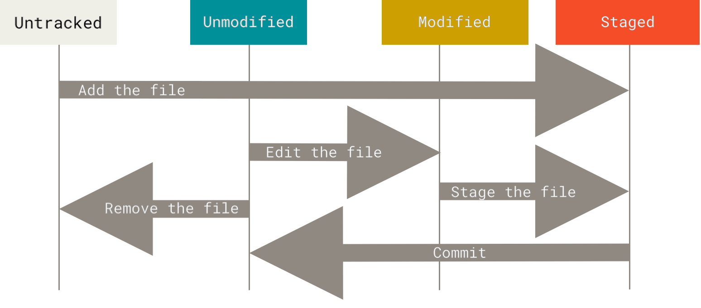

2.2 Git の基本操作-変更内容のリポジトリへの記録
変更内容のリポジトリへの記録
ここまでの作業により、本物の Git リポジトリがローカルマシン内に取得できました。 そしてそのプロジェクトのチェックアウト後の、つまり全ファイルのワーキングコピーが取得できた状態です。 この後はファイル編集を行って、その変更内容のスナップショットをコミットしていきます。 そのたびにプロジェクトには、変更予定の内容が積みあがっていきます。
ワーキングコピー内にあるファイルは 2 種類あって、追跡された（tracked）ファイルと追跡されていない（untracked; 未追跡の）ファイルです。 追跡されたファイルは、最新のスナップショットに存在するファイルです。 このファイルは後の操作によって、修正されていない（unmodified）、修正された（modified）、ステージされた（staged）という状態をとります。 簡単に言うと、追跡されたファイルは Git が認識しているファイルということです。
未追跡のファイルは上に該当しないファイルです。 ワーキングディレクトリ内のこの未追跡ファイルは、最新のスナップショットにもなく、ステージングエリアにもありません。 リポジトリのクローンを取得したばかりのときには、ファイルはすべて追跡された状態であり、修正されていない状態です。 Git がファイルを取り出した直後であって、だれも手をつけていないからです。
ファイルに変更を加えると、Git は修正されたものとして扱います。 最終のコミットの状態から変更が加えられたからです。 作業を進めるにつれて、修正したファイルをステージの状態とし、その後にコミットします。 こうした作業を繰り返し進めていきます。

図 8. ファイル状態のライフサイクル
ファイル状態のチェック
ファイルの状態を確認するツールとして用いるのが git status です。
クローンを取得した直後にこのコマンドを実行すると、以下のような出力になります。
$ git status
On branch master
Your branch is up-to-date with 'origin/master'.
nothing to commit, working directory cleanこの出力メッセージは、ワーキングディレクトリがきれいな状態にあることを示しています。
言いかえると、追跡されているファイルがどれも修正されていない状態です。
また未追跡のファイルは 1 つもなく、もしあれば一覧に表示されているところです。
さらに、今どのブランチを対象としているか、サーバー上にあるそのブランチから分岐していないかどうかが示されています。
今のところブランチは、デフォルトのブランチ master になっているものとします。
この段階ではあまり気にしないでください。
Git のブランチ機能 の章においてブランチについて詳しく説明します。
ではプロジェクトに新規のファイルとして、単純な README ファイルを追加します。
以前までは、このファイルはなかったとします。
ここで git status コマンドを実行すると、未追跡のファイルとして以下のように表示されます。
$ echo 'My Project' > README
$ git status
On branch master
Your branch is up-to-date with 'origin/master'.
Untracked files:
(use "git add <file>..." to include in what will be committed)
README
nothing added to commit but untracked files present (use "git add" to track)新規に生成した README ファイルは、未追跡の状態にあることがわかります。
git status の出力において、“Untracked files” （“未追跡ファイル”）という見出しのもとにこのファイルが示されているからです。
未追跡という状態は、直前のスナップショット（直前のコミットのとき）には存在していなかったファイルを表わします。
このようなファイルは、Git に対して管理の指示を出さないかぎり、コミットされたスナップショットの中には含まれません。
ですから、生成した実行モジュールであるとか、含めるつもりのないファイルとかを誤って含めてしまうようなことは起きません。
さてこうして README ファイルを含めたので、ここから追跡を始めましょう。
新規ファイルの追跡
新規生成したファイルを追跡状態にするには git add コマンドを実行します。
README ファイルの場合、以下のようになります。
$ git add README再度 git status コマンドを実行すると、今度は README ファイルが追跡された状態となり、かつステージされた状態となっています。
次にコミットを待っている状態です。
$ git status
On branch master
Your branch is up-to-date with 'origin/master'.
Changes to be committed:
(use "git restore --staged <file>..." to unstage)
new file: README“Changes to be committed”（“コミット待ちの変更”）という見出しのもとに示されているので、ステージされた状態であることがわかります。
この時点でコミットを行うと、git add コマンドを行ったときのこのファイルのバージョンが、スナップショットの中に記録されます。
ちょっと前に git init に続けて git add <ファイル> を実行していました。
そのときも実は、ディレクトリ内のファイルの追跡を開始していたのです。
git add コマンドではパスを指定しますが、パスというのはファイルパスか、あるいはディレクトリパスです。
ディレクトリパスを指定した場合は、そのディレクトリ内にあるファイルがすべて追加されます。
修正ファイルのステージング
追跡されている状態のファイルを修正してみます。
CONTRIBUTING.md というファイルがすでに追跡されている状態にあって、これに変更をかけた場合 git status コマンドによる出力結果は以下のようになります。
$ git status
On branch master
Your branch is up-to-date with 'origin/master'.
Changes to be committed:
(use "git reset HEAD <file>..." to unstage)
new file: README
Changes not staged for commit:
(use "git add <file>..." to update what will be committed)
(use "git checkout -- <file>..." to discard changes in working directory)
modified: CONTRIBUTING.mdCONTRIBUTING.md ファイルは “Changes not staged for commit” （“未ステージでコミット待ちの変更”）という見出しのもとに表示されています。
このファイルが元から追跡された状態にあって、それがワーキングディレクトリ内で修正され、ただしまだステージされていない状態であることを示しています。
これをステージされた状態にするには git add コマンドを実行します。
そもそも git add コマンドには、いろいろな利用目的があります。
新規ファイルを追跡状態にしたり、ステージ状態にしたりします。
その他にも、マージ時にコンフリクト（競合）が発生したファイルに対して、解決された（resolved）というマークをつける際にも利用します。
このコマンドは「プロジェクトにファイルを追加するもの」と考えるのではなく「次のコミットに向けて指定内容を加える」と考えるのがわかりやすくなります。
さてそこで git add を実行して、CONTRIBUTING.md ファイルをステージ状態にします。
その直後にまた git status を実行してみます。
$ git add CONTRIBUTING.md
$ git status
On branch master
Your branch is up-to-date with 'origin/master'.
Changes to be committed:
(use "git reset HEAD <file>..." to unstage)
new file: README
modified: CONTRIBUTING.md2 つのファイルが、ともにステージされた状態にあって、次のコミットに備えた状態です。
ここで仮に CONTRIBUTING.md にはまだ編集したい内容があって、それを終えてからコミットするとしましょう。
ファイルをもう一度開いて編集し、コミットしたとします。
git status を実行すると、今度は以下のようになります。
$ vim CONTRIBUTING.md
$ git status
On branch master
Your branch is up-to-date with 'origin/master'.
Changes to be committed:
(use "git reset HEAD <file>..." to unstage)
new file: README
modified: CONTRIBUTING.md
Changes not staged for commit:
(use "git add <file>..." to update what will be committed)
(use "git checkout -- <file>..." to discard changes in working directory)
modified: CONTRIBUTING.mdこれはどういうことでしょう？
CONTRIBUTING.md がステージされた状態とステージされていない状態の両方にあがっているではないですか。
どうしてこんなことになっているのでしょう？
ここからわかることは、ファイルがステージ状態になるときには、git add コマンドを実行したそのときのファイル内容がそのまま記録されるということです。
つまりここでコミットを行うと、git add コマンドを最後に実行した時点での CONTRIBUTING.md ファイルのバージョンが、コミットに向けて採用されるのであって、git commit を実行する時点でワーキングディレクトリにある最新の CONTRIBUTING.md がコミットされるのではないわけです。
git add を実行した後にファイルに編集をかけたら、再度 git add を実行しないと、そのファイルの最新バージョンはステージ状態にはなりません。
$ git add CONTRIBUTING.md
$ git status
On branch master
Your branch is up-to-date with 'origin/master'.
Changes to be committed:
(use "git reset HEAD <file>..." to unstage)
new file: README
modified: CONTRIBUTING.mdステータスの簡略表示
git status による出力は大変わかりやすいものですが、その分、表示される情報も多くなります。
このコマンドには簡略表示するためのフラグが用意されているので、変更内容をもっと簡略に見ることができます。
以下のように git status -s または git status --short と実行すると、とても簡単な出力となります。
$ git status -s
M README
MM Rakefile
A lib/git.rb
M lib/simplegit.rb
?? LICENSE.txt新規ファイルで未追跡であるものには ?? がつきます。新規ファイルであっても、ステージングエリアに追加されている場合は A になります。
また修正されたファイルは M といった具合です。その表示箇所は 2 文字からなり、1 文字めはステージングエリアでの状態、2 文字めはワーキングディレクトリでの状態を示します。
したがって上の例において README ファイルは、ワーキングディレクトリでの修正状態にあるものの、ステージされていないことがわかります。
また lib/simplegit.rb ファイルの場合は、修正された状態であり、かつステージされた状態です。
Rakefile ファイルは、修正されステージされた状態で、さらにそこから修正された状態を表わします。
このファイルへの変更内容には、ステージされた状態での内容と、ステージされていない状態での内容が混在しているということです。
ファイルの無視設定
取り扱っているファイルの中には、Git が自動的な追加を行ってほしくないものや、未追跡と示すことが不要なファイルもでてきます。
そういうファイルというのは、一般的には自動生成されるファイルであり、ログファイルとか、システムビルド時に出力されるファイルなどです。
こういうファイルに対しては .gitignore というファイルを生成して、無視したいファイルパターンを指定することができます。
.gitignore の例が以下です。
$ cat .gitignore
*.[oa]
*~1 行めは、“.o” または “.a” で終わるファイルを無視する設定です。
“.o” や “.a” といえば、ソースコードをビルドした際に生成されるオブジェクトファイルやアーカイブファイルのことです。
また 2 行めはチルド（~）で終わるファイルを無視するものです。
このチルドつきのファイルは Emacs のようなエディターが、一時ファイルに対してつけるものです。
この他にも log、tmp、pid といったディレクトリ、自動生成されるドキュメントファイル、といったものも無視の設定が必要でしょう。
あらかじめ .gitignore ファイルを設定しておいてから、作業に取りかかるのが良いと思います。
これを行っておけば Git リポジトリの中で、本当はコミットするつもりがないのに誤ってコミットしてしまう、といったことがなくなるはずです。
.gitignore ファイル内のパターン記述の規則は以下のとおりです。
-
空行、および
#で始まる行は無視されます。 -
標準的な glob パターンが指定可能です。 この指定はワーキングツリー全体を通じて再帰的に適用されます。
-
ファイルパターンの先頭にスラッシュ（
/）を記述すると、再帰的なマッチングを行いません。 -
ディレクトリを指定する場合は、パターンの最後にスラッシュ（
/）を記述します。 -
無視しないことを表わすには、先頭に感嘆符（
!）をつけます。
glob パターンとは、シェルにおいて用いられている単純な正規表現に似ています。
アスタリスク（*）は 0 個以上の文字にマッチします。
[abc] は、ブラケット内のいずれか（この例では a、b、c のどれか）にマッチします。
疑問符（?）は1 文字にマッチします。
ブラケットに囲まれた文字がハイフンで区切られている場合（[0-9]）は、その範囲の文字いずれか（この例では 0 から 9）にマッチします。
アスタリスクを 2 つ用いると、階層化したディレクトリにマッチします。
例えば a/**/z は a/z、a/b/z、a/b/c/z のいずれにもマッチします。
.gitignore ファイルのもう 1 つの例です。
# # .a ファイルすべてを無視する
*.a
# 上で .a ファイルを無視するが、lib.a は無視しない
!lib.a
# カレントディレクトリの TODO ファイルのみ無視、subdir/TODO は無視しない
/TODO
# build ディレクトリ内をすべて無視する
build/
# doc/notes.txt は無視、doc/server/arch.txt は無視しない
doc/*.txt
# doc/ ディレクトリとそのサブディレクトリにある *.pdf ファイルをすべて無視
doc/**/*.pdf|
GitHub では各種のプロジェクト向け、あるいはプログラミング言語向けに実に多くの |
|
この単純な例では、1 つのリポジトリに対して 1 つの 複数の |
修正後のステージ状態の確認
git status だけではよくわからない場合、つまり変更したファイルを確認するのではなく、変更したファイルの変更箇所を確認したい、というときには git diff コマンドを使います。
git diff については後に詳しく説明します。
このコマンドは、これからよく利用するものになると思いますが、これを使えば以下の 2 つの状況を確認できます。
1 つは、修正された状態であってステージされた状態でないものは何か、ということ。
もう 1 つは、ステージされた状態であって、これからコミットしようとしているものは何か、ということです。
git status でも、ファイル名の一覧からその状況はだいたいわかります。
しかし git diff を使えば、追加したり削除したりした行はすべて明らかになります。
まさにパッチそのものです。
ここでもう一度 README ファイルを編集してステージ状態にしておきます。
さらに CONTRIBUTING.md ファイルを編集し、ステージされていない状態とします。
git status を実行すると、再び以下のような出力となります。
$ git status
On branch master
Your branch is up-to-date with 'origin/master'.
Changes to be committed:
(use "git reset HEAD <file>..." to unstage)
modified: README
Changes not staged for commit:
(use "git add <file>..." to update what will be committed)
(use "git checkout -- <file>..." to discard changes in working directory)
modified: CONTRIBUTING.md何が修正され、何がステージされていないかを見てみます。
引数を与えずに git diff を実行します。
$ git diff
diff --git a/CONTRIBUTING.md b/CONTRIBUTING.md
index 8ebb991..643e24f 100644
--- a/CONTRIBUTING.md
+++ b/CONTRIBUTING.md
@@ -65,7 +65,8 @@ branch directly, things can get messy.
Please include a nice description of your changes when you submit your PR;
if we have to read the whole diff to figure out why you're contributing
in the first place, you're less likely to get feedback and have your change
-merged in.
+merged in. Also, split your changes into comprehensive chunks if your patch is
+longer than a dozen lines.
If you are starting to work on a particular area, feel free to submit a PR
that highlights your work in progress (and note in the PR title that it'sこのコマンドは、ワーキングディレクトリにある内容とステージングエリアにある内容を比較しています。 この結果から、編集をかけていてステージされていない内容がわかります。
ステージされている状態、つまり次のコミット予定となる内容を確認するには git diff --staged を実行します。
このコマンドは、ステージされている変更内容と、最新コミットの内容とを比較しています。
$ git diff --staged
diff --git a/README b/README
new file mode 100644
index 0000000..03902a1
--- /dev/null
+++ b/README
@@ -0,0 +1 @@
+My Projectここで重要なことを示しておきますが、git diff だけでは、最後のコミット以降に加えられた変更はすべて表示されません。
あくまでステージされていない変更のみです。
変更された内容をすべてステージされた状態にしていた場合、git diff では何も出力されません。
もう 1 つの例です。
CONTRIBUTING.md ファイルをステージされた状態にした上でさらに編集しているとします。
git diff を実行すれば、このファイルに加えられている修正のうち、ステージされている内容と、ステージされていない内容を見ることができるはずです。
まずはそういった状況を以下により確認します。
$ git add CONTRIBUTING.md
$ echo '# test line' >> CONTRIBUTING.md
$ git status
On branch master
Your branch is up-to-date with 'origin/master'.
Changes to be committed:
(use "git reset HEAD <file>..." to unstage)
modified: CONTRIBUTING.md
Changes not staged for commit:
(use "git add <file>..." to update what will be committed)
(use "git checkout -- <file>..." to discard changes in working directory)
modified: CONTRIBUTING.mdgit diff を実行すれば、何がステージされていない状態にあるかがわかります。
$ git diff
diff --git a/CONTRIBUTING.md b/CONTRIBUTING.md
index 643e24f..87f08c8 100644
--- a/CONTRIBUTING.md
+++ b/CONTRIBUTING.md
@@ -119,3 +119,4 @@ at the
## Starter Projects
See our [projects list](https://github.com/libgit2/libgit2/blob/development/PROJECTS.md).
+# test lineさらに git diff --cached を実行すると、この時点までにステージ状態としている内容を見ることができます。
（--staged と --cached は同じことです。）
$ git diff --cached
diff --git a/CONTRIBUTING.md b/CONTRIBUTING.md
index 8ebb991..643e24f 100644
--- a/CONTRIBUTING.md
+++ b/CONTRIBUTING.md
@@ -65,7 +65,8 @@ branch directly, things can get messy.
Please include a nice description of your changes when you submit your PR;
if we have to read the whole diff to figure out why you're contributing
in the first place, you're less likely to get feedback and have your change
-merged in.
+merged in. Also, split your changes into comprehensive chunks if your patch is
+longer than a dozen lines.
If you are starting to work on a particular area, feel free to submit a PR
that highlights your work in progress (and note in the PR title that it's|
Git Diff の外部プログラム
これ以降も |
変更に対するコミット
ここまでにステージングエリアへの追加が思いどおりにできたら、次は変更をコミットします。
なおステージされていない状態のものというと、新規生成したり修正したりしただけで、編集以後に git add を実行していないファイルなので、コミット対象にはなりません。
そのようなファイルは、修正された状態のまま残ります。例として直前に git status を実行して、ファイルがすべてステージされた状態であったとします。
ここでコミットを行って変更を確定します。
コミットを行う最も簡単な方法は git commit です。
$ git commitこのコマンドを実行すると、指定したエディターが起動します。
|
エディターはシェル上の環境変数 |
エディターが起動すると以下のようなメッセージが画面に表示されます。 （以下の例は Vim の場合です。）
# Please enter the commit message for your changes. Lines starting
# with '#' will be ignored, and an empty message aborts the commit.
# On branch master
# Your branch is up-to-date with 'origin/master'.
#
# Changes to be committed:
# new file: README
# modified: CONTRIBUTING.md
#
~
~
~
".git/COMMIT_EDITMSG" 9L, 283C上のように表示されたデフォルトのコミットメッセージには、最新の git status コマンドの出力結果がコメントになって示されています。
さらに 1 行めが空行となっています。
そこでこのコメントを削除してコミットメッセージを新たに入力します。
あるいは何をコミットしたのかを忘れないように、このコメントを残しておいてもかまいません。
|
さらにもっと細かく情報を残しておきたいと思ったら、 |
エディターを終了すると、編集したコミットメッセージをつけてコミットを完了します。 （コメントや diff の出力結果は取り除かれます。）
または、インラインによりコミットメッセージを指定することもできます。
この場合は commit コマンドに -m フラグをつけてコメントを指定します。
$ git commit -m "Story 182: fix benchmarks for speed"
[master 463dc4f] Story 182: fix benchmarks for speed
2 files changed, 2 insertions(+)
create mode 100644 READMEこうして初めてのコミットが完了しました。
コミットの結果として情報が表示されています。
どのブランチに対してコミットを行ったか（例では master）、コミットには何という SHA-1 値が使われたか（463dc4f）、変更ファイル数、追加行数、削除行数、といった情報です。
コミットというのは、ステージングエリアに置かれたスナップショットを記録するものでした。 ですからステージされていない状態のものは、修正されたまま残ります。 これを履歴に適用するには、もう一度コミットします。 コミットを行うたびに、プロジェクトのスナップショットが保存されることになります。 保存されているところからは、元に戻したり、それ以後のものと比較したりすることができます。
ステージングエリアの省略
コミットする内容を思いどおりに作り上げていけるという点では、ステージングエリアというものは非常に使い勝手のよいものです。
しかしいろいろな作業を進めていく中では、少々面倒な作業になることもあるでしょう。
実はステージングエリアの利用は省略することができます。
Git には単純なショートカットが用意されていて、git commit コマンドに -a オプションをつけます。
これをつけると、追跡された状態のファイルであれば、自動的にステージ状態とした上でコミットを行います。
git add を行う操作は省略できます。
$ git status
On branch master
Your branch is up-to-date with 'origin/master'.
Changes not staged for commit:
(use "git add <file>..." to update what will be committed)
(use "git checkout -- <file>..." to discard changes in working directory)
modified: CONTRIBUTING.md
no changes added to commit (use "git add" and/or "git commit -a")
$ git commit -a -m 'Add new benchmarks'
[master 83e38c7] Add new benchmarks
1 file changed, 5 insertions(+), 0 deletions(-)この例において CONTRIBUTING.md ファイルは git add コマンドを実行しなくてもコミットができたということです。
-a オプションは、修正されたファイルはすべて処理対象にするためです。
便利な方法ではありますが、-a オプションを使うと意図していない修正ファイルまでコミットしてしまうことも起きますから、十分注意してください。
ファイルの削除
Git 上にてファイルを削除するには、追跡されている状態を解除する必要があります。
（正確にはステージングエリアから削除します。）
そしてその後にコミットします。
git rm が Git 上でのファイル削除を行ってくれます。
そしてさらにワーキングディレクトリから、そのファイルを実際に削除します。
これ以降、このファイルは未追跡ファイルにさえ登場しなくなります。
ワーキングディレクトリからファイルを単に削除しただけの場合は、git status の出力において “Changes not staged for commit”（つまりステージされていない状態）の項目として表示されます。
$ rm PROJECTS.md
$ git status
On branch master
Your branch is up-to-date with 'origin/master'.
Changes not staged for commit:
(use "git add/rm <file>..." to update what will be committed)
(use "git checkout -- <file>..." to discard changes in working directory)
deleted: PROJECTS.md
no changes added to commit (use "git add" and/or "git commit -a")続けて git rm を実行すると、ファイルが削除されたステージ状態となります。
$ git rm PROJECTS.md
rm 'PROJECTS.md'
$ git status
On branch master
Your branch is up-to-date with 'origin/master'.
Changes to be committed:
(use "git reset HEAD <file>..." to unstage)
deleted: PROJECTS.md次にコミットを行うと、ファイルは完全に削除され追跡対象外になります。
ファイルを修正しステージングエリアにすでに置いていた場合は、-f オプションをつけて強制的に削除する必要があります。
このオプションは誤操作をしないためにあります。
スナップショットにまだ記録されていないデータや、Git が復旧できないデータを誤って削除しないようにするためです。
さらにもう 1 つ必要になってくるのが、ワーキングツリー内にファイルを持ちつつ、ステージングエリアからは削除しないという操作です。
いいかえると、ファイルは存在していて欲しいが Git にはもう管理して欲しくないという状況です。
これが必要になるのは、.gitignore ファイルに加えることを忘れていたために、間違ってステージされてしまったファイルを戻すときなどです。
大量のログファイルや、コンパイル結果として生成された .a ファイルなどがこれにあたります。
こういった際には --cached オプションを使います。
$ git rm --cached READMEgit rm コマンドに指定する引数は、ファイル、ディレクトリの他にも、ファイルを表わす glob パターンを指定することができます。
たとえば以下のようなことが可能です。
$ git rm log/\*.logアスタリスク（*）の前にバックスラッシュ（\）を記述しています。
これが必要になるのは、シェルによるファイル展開に加えて、Git も独自のファイル展開を行うためです。
このコマンド実行では、log/ ディレクトリにある、拡張子 .log のファイルがすべて削除されます。
以下のようなこともできます。
$ git rm \*~このコマンドの場合は、ファイル名が ~ で終わるファイルをすべて削除します。
ファイルの移動
VCS の多くが行う方法と違って Git はファイル移動を追跡しません。 したがってファイル名を変更しても、ファイル名が変更されたことを示すメタデータは Git 内に保存されません。 ただし Git は優れていて、実際の状況からファイル移動を識別することができます。 このファイル移動に関しては、後に説明します。
なお多少混乱するかもしれませんが、Git には mv コマンドがあります。
ファイル名を変更したい場合、以下のようなコマンド実行が可能です。
$ git mv file_from file_toコマンドは普通に実行されます。 実際にこれを実行してステータスを確認してみると、Git がファイル名を変更しているように見えます。
$ git mv README.md README
$ git status
On branch master
Your branch is up-to-date with 'origin/master'.
Changes to be committed:
(use "git reset HEAD <file>..." to unstage)
renamed: README.md -> READMEしかしこの結果は、以下を実行しているのと同じです。
$ mv README.md README
$ git rm README.md
$ git add READMEGit は、ファイル名の変更が行われたと、なんとなくわかるだけです。
したがって上の方法と mv を使う方法のどちらにしたところで、そこは問題ではありません。
両者の違いは、3 つのコマンドを使っているところを、git mv では 1 つのコマンドで済む、というだけのことです。
つまり git mv は便利な機能でしかありません。
それよりも大切なことは、ファイル名の変更はどのコマンドを使ってもよいので、その後には add コマンドや rm コマンドを実行して、最後にはコミットを行う必要があるということです。